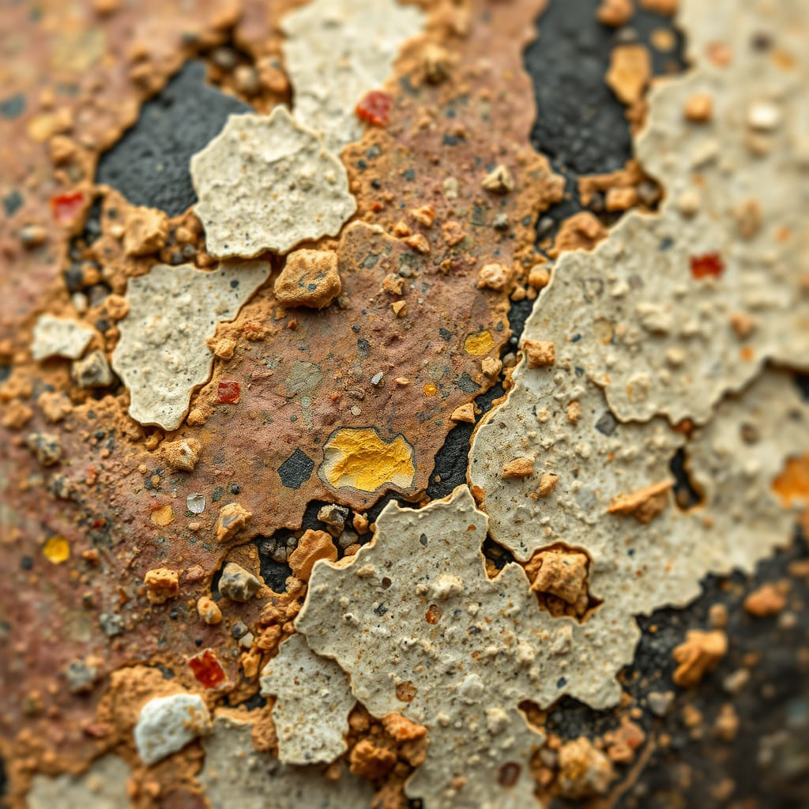

Collections
Descriptive datasets for cultural analysis. Click a tab to view each category.
Archeology
Anthropology
Archeology
Bronze Kohl Container
Bronze Kohl Container (ID: A-001)
Name Bronze Kohl Container
Material Cast bronze, residual pigment
Size/Weight/Shape H 9.2 cm; Ø 6.1 cm; cylindrical; ~235 g
Estimated Age ~2nd–3rd c. CE (inferred by style)
Preservation State Complete; stable patina; minor pitting
Location Found Oasis market quarter, grid N4; depth 0.8 m
Likely Purpose Cosmetic/kohl storage vessel
Evidence of Use Dark residue inside; wear around rim
Manufacture Clues Lathe marks; chased band motifs
Found With Bead strands, small bone spatula
Burial or Habitat Context Domestic refuse pit (midden)
Symbolism Geometric bands; no overt iconography
Comparison Similar to Levantine cosmetic tins of Roman period
Preservation Notes Stable; store dry, low light; no abrasive cleaning
Faience Scarab Amulet
Faience Scarab Amulet (ID: A-002)
Name Faience Scarab Amulet
Material Glazed faience
Size/Weight/Shape L 2.7 cm; W 1.8 cm; ovoid; ~9 g
Estimated Age Late Period style, ~664–332 BCE (stylistic)
Preservation State Complete; glaze crazing; minor edge loss
Location Found Shaft tomb debris, locus T3
Likely Purpose Protective pendant/amulet
Evidence of Use String polish at suspension hole
Manufacture Clues Molded; turquoise glaze; incised base
Found With Bead fragments, linen scraps
Burial or Habitat Context Secondary burial redeposit
Symbolism Rebirth; solar associations
Comparison Comparable to amulets from Delta workshops
Preservation Notes Avoid moisture; box mount; silica gel
Bronze Kohl Container (Variant)
Bronze Kohl Container — Variant Catalog (ID: A-003)
Name Bronze Cosmetic Jar (Variant)
Material Bronze alloy, patina
Size/Weight/Shape H 8.8 cm; Ø 6.0 cm; cylindrical; ~228 g
Estimated Age 1st–3rd c. CE (contextual)
Preservation State Complete; light corrosion at base
Location Found Workshop scatter, trench W1
Likely Purpose Cosmetic pigment storage
Evidence of Use Residue film; lid abrasion
Manufacture Clues Cast body; chased decoration; soldered base
Found With Crucible slag; bronze offcuts
Burial or Habitat Context Craft/production area
Symbolism Abstract borders; possibly maker’s mark
Comparison Parallels to Nabatean cosmetic containers
Preservation Notes Monitor RH; microcrystalline wax barrier
Anthropology
Cranial Vault Fragment
Cranial Vault Fragment (ID: N-101)
Name Cranial Vault Fragment
Material Human bone
Size/Weight/Shape ~7.5 × 5.2 cm; curved plate; ~12 g
Estimated Age ~2,000–2,300 BP (AMS dated)
Preservation State Partial; edges weathered; cortical loss
Location Found Rock-shelter burial, sector B
Likely Purpose Human remains (no utilitarian function)
Evidence of Use None applicable
Manufacture Clues Not manufactured; natural anatomy
Found With Long-bone shafts; ochre lenses
Burial or Habitat Context Primary interment, flexed
Symbolism Possible pigmenting ritual (ochre)
Comparison Similar to cave burials in adjacent valley
Preservation Notes Pack with inert foam; stable, low RH

Coprolite Sample
Coprolite Sample (ID: N-102)
Name Coprolite Sample
Material Mineralized fecal matter
Size/Weight/Shape ~3.5 × 2.1 × 1.8 cm; irregular; ~18 g
Estimated Age ~1,800 BP (stratigraphic)
Preservation State Consolidated; micro-fractures present
Location Found Midden deposit M2; unit 5
Likely Purpose Not an artifact; biological remain
Evidence of Use N/A
Manufacture Clues N/A
Found With Charcoal flecks; plant phytoliths
Burial or Habitat Context Household refuse dump
Symbolism None
Comparison Comparable to samples from Layer III
Preservation Notes Low-RH microclimate; handle minimally
Cranial Vault Fragment (Second Specimen)
Cranial Vault Fragment — Specimen B (ID: N-103)
Name Cranial Vault Fragment (Specimen B)
Material Human bone
Size/Weight/Shape ~6.9 × 4.6 cm; curved plate; ~10 g
Estimated Age ~2,150 BP (contextual)
Preservation State Partial; eroded diploë exposure
Location Found Same rock-shelter, sector C
Likely Purpose Human remains (no utilitarian function)
Evidence of Use N/A
Manufacture Clues N/A
Found With Dental enamel chips; small lithics
Burial or Habitat Context Secondary deposition layer
Symbolism Possible curated remains
Comparison Consistent with Specimen A morphology
Preservation Notes Buffer supports; limit handling
AI Involvement & Sources
Disclosure: The content in this gallery was entirely created by AI under human direction, and then curated, reviewed, and edited by a human before publication.
Concept & Content: Artifact descriptions drafted with ChatGPT; edited for descriptive neutrality.Images: All images loaded from /images/collections. Filenames used exactly as stored in the repository.